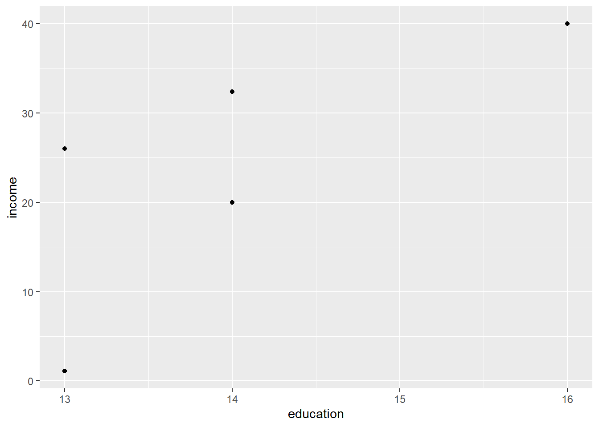
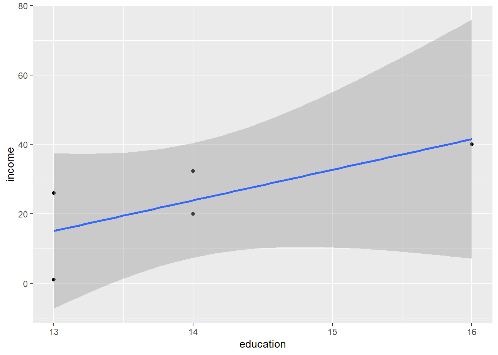
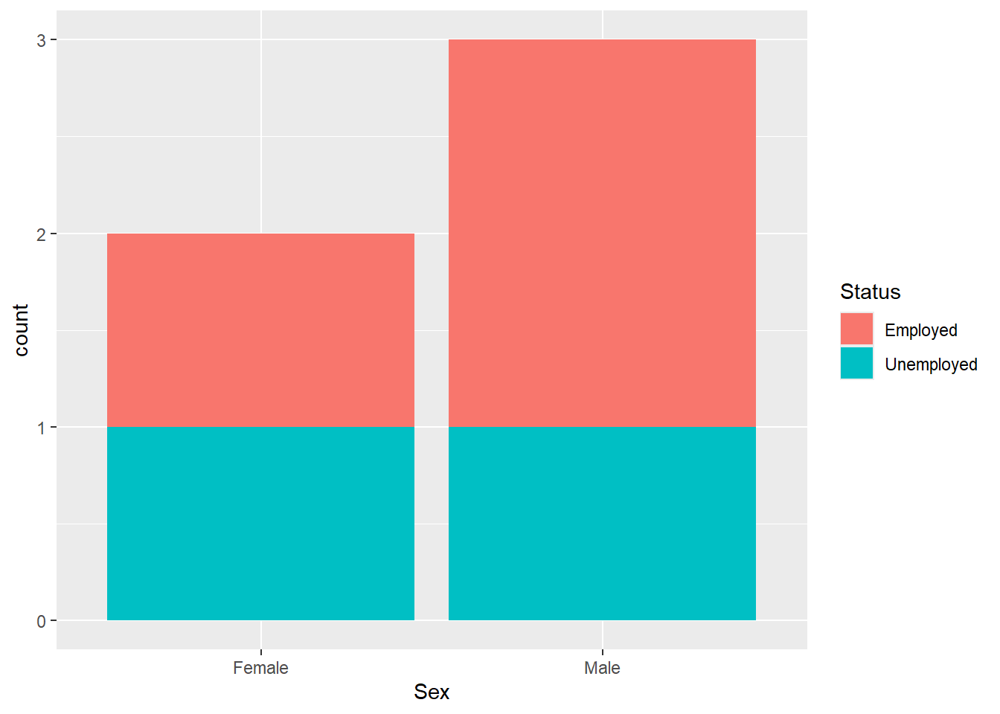
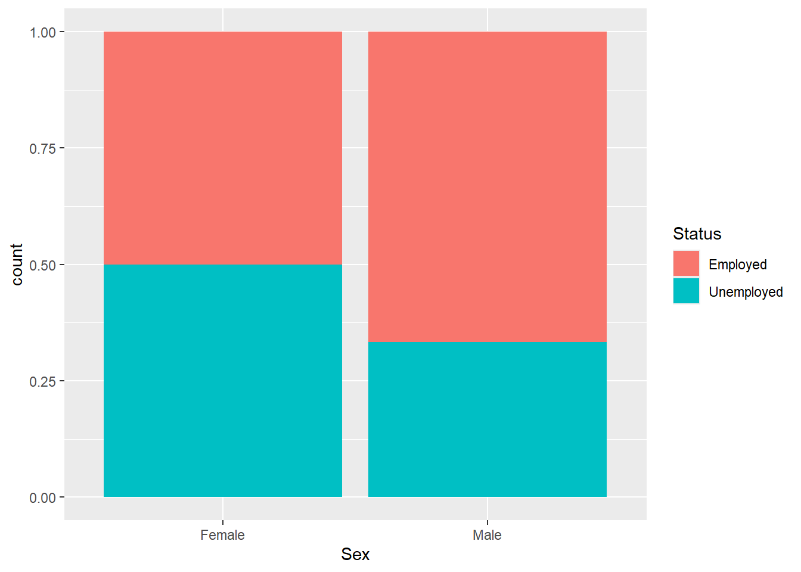
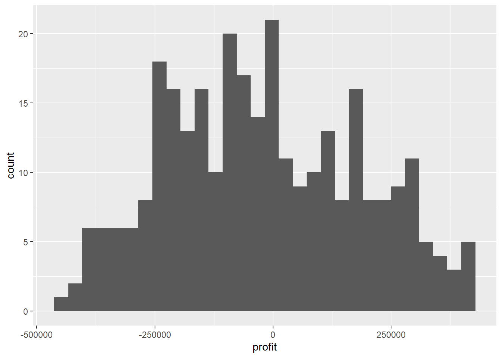
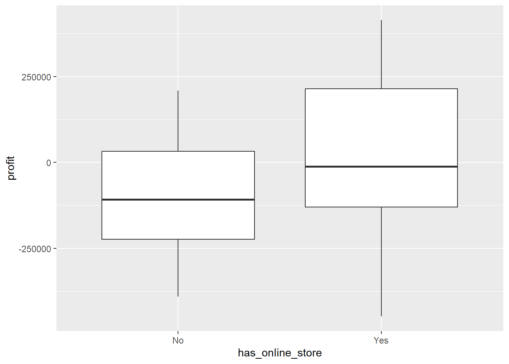
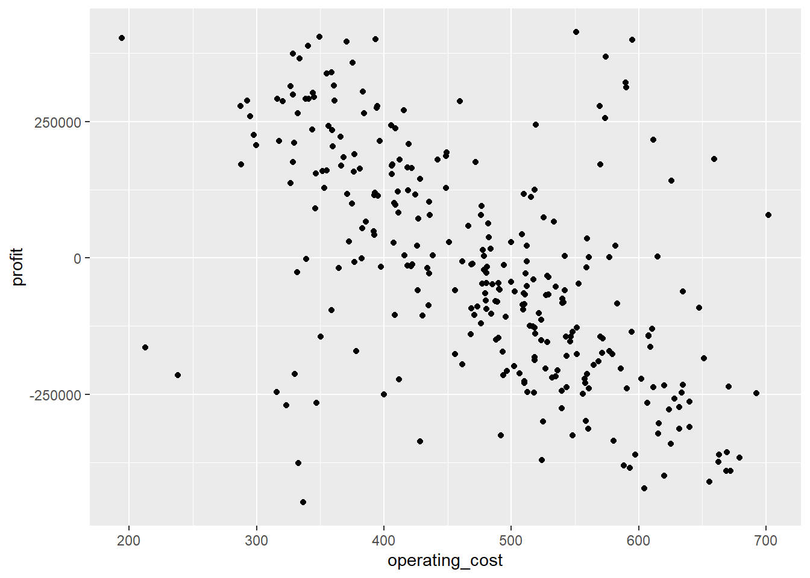
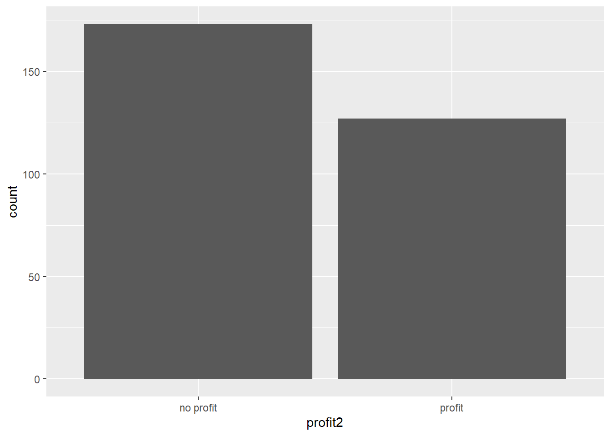
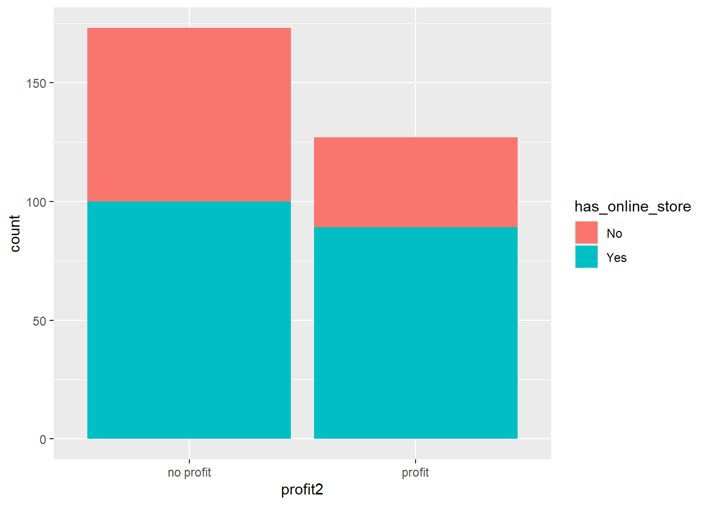
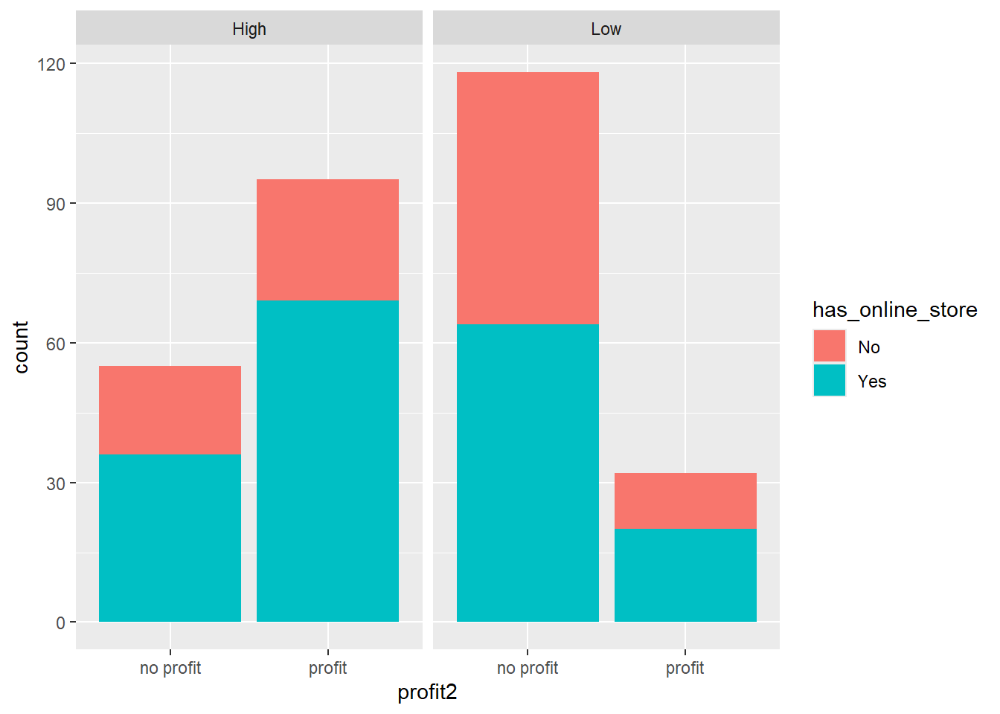

2+2[1] 4If you have not yet installed R and RStudio, you can still follow along with the activities by using this link:
https://m2huynh.github.io/Monash-JNU/
This is not the same thing as using R/RStudio however, so try and install these.
Up to this point, most of your data handling and analysis has probably been carried out in Microsoft Excel. Excel is an extremely accessible and versatile tool. It is excellent for tasks such as entering data, performing quick calculations, producing pivot tables, and creating basic charts. For many introductory tasks, particularly when datasets are relatively simple and the required analyses are straightforward, Excel is both sufficient and efficient. However, as data analysis requirements become more complex, the limitations of Excel start to appear. Large datasets can quickly slow Excel down or cause it to become unstable. Sophisticated statistical analyses can be difficult or impossible to implement in Excel without resorting to cumbersome add-ins.
R addresses many of these limitations directly. R is an open-source (and free!) programming language and computing environment designed specifically for statistical analysis, data manipulation, and visualisation. It was developed in the mid-1990s by Ross Ihaka and Robert Gentleman at the University of Auckland, with the explicit goal of providing a free, flexible, and powerful tool for statistical computing.
It is important to emphasise that learning R does not mean abandoning Excel entirely. In many workplaces, Excel remains the default tool for data sharing and quick checks, while R is used for the more demanding analytical tasks. You might export results from R into Excel for colleagues to view, or import Excel files into R for more sophisticated analysis. Rather than replacing Excel, R complements it, adding depth, efficiency, and power to your analytical skill set.
While R is the programming language and computational engine that performs the analysis, RStudio is the interface that makes working with R more intuitive, organised, and efficient. At its simplest:

RStudio was developed to make the process of coding in R more approachable, especially for those who may be new to programming. Without RStudio’s Integrated development environment (IDE), using R would involve writing code in a basic text editor and running it through the R console, an approach that is functional but lacks structure and ease of navigation. RStudio addresses this by combining a code editor, console, file manager, plotting tools, and help system into a single, unified workspace. This integration allows you to work more productively, keep track of your files and scripts, and view outputs such as plots or model results without switching between multiple programs.
In essence, RStudio provides a professional and efficient working environment for anyone using R, from beginners to experienced data scientists. It is designed to streamline your workflow, reduce the friction of managing code and outputs, and make R more accessible without sacrificing power or flexibility.
You will need to install both R and RStudio. Depending on your operating system, the instructions will be different:
.exe file (by default it will go to your ‘My Downloads’ folder and will look something like R-x.x.x-win.exe)When you first open RStudio, you will see that the window is divided into four main panes (if you only see 3 panes, go to File > New File > R Script). Each pane serves a distinct purpose and can be customised to suit your workflow. Understanding these panes is the first step to working efficiently in RStudio.

The Console is the beating heart of RStudio—it’s where R actually executes commands. When you type something like:
2+2[1] 4and press Enter, the Console evaluates it and returns the answer (in this case “4”). Think of the Console as a direct conversation with R: you speak in R code, and R answers back.
While the Console is for “chatting” with R, the Source Editor is for writing full documents. This is where you type and save your scripts (.R files) or notebooks (.Rmd files).
Key features:
This pane helps you keep track of what’s happening “behind the scenes.”
This pane is invaluable for staying organized and avoiding the classic beginner question: “Wait, where did my dataset go?”
This multipurpose pane is like a Swiss Army knife, switching roles depending on which tab you select:
plot(), ggplot(), and other tools.When you first download and install R onto your computer, think of it like buying a brand-new smartphone. Out of the box, the phone comes with a handful of useful apps already installed: a calculator, messaging, and a web browser. Similarly, R comes with a base set of functions ready to use immediately: functions for arithmetic, working with vectors and data frames, or producing simple plots. These built-in tools are powerful, but sooner or later you’ll want to extend what your R phone can do.
On your smartphone, if you want to stream music, you open the App Store and download Spotify. If you want to edit photos, you might download Instagram. Each app extends the base functionality of the phone. In the world of R, these add-ons are called packages.

Packages are collections of R functions, data, and documentation bundled together to solve specific problems. For example:
ggplot2 adds advanced data visualization tools.dplyr makes data wrangling faster and easier.lme4 allows you to fit complex mixed-effects models.Just as there are millions of apps in the App Store, there are thousands of packages available for R, hosted on the Comprehensive R Archive Network (CRAN) and other repositories.
Installing a package is like downloading an app to your phone. You only need to do this once. On a smartphone, once you have downloaded Spotify, the app is stored on your device until you delete it. Likewise, when you run:
install.packages("ggplot2")R connects to CRAN (the App Store equivalent) and downloads the files it needs. These files are then stored in your R library folder. You do not need to install ggplot2 again unless you remove it or want to update it.
A useful point to emphasise to learners is that “install” is about making the tool available on your computer, not about actually starting to use it. Installing Spotify doesn’t mean music starts playing, it just means the app is on your phone.
Now imagine you restart your phone. Even though Spotify is installed, it doesn’t automatically open itself every time the phone powers on. If you want to listen to music, you need to tap the Spotify icon. In R, this step is accomplished with the library() function:
library(ggplot2)This command tells R to load the package into the current session so its functions are available. Until you run library(ggplot2), R doesn’t “know” about the package: you can’t call ggplot() or other functions it contains. This is like your phone not be able to play music until you’ve loaded your Spotify app.
The key distinction:
install.packages() = downloading the app once.library() = opening the app each time you want to use it.This means if you close R or restart your computer, the package is still installed but not yet loaded. You must run library(ggplot2) again in your new session, just like you would open the Spotify app each time you want to play music.
One of the most important ideas to understand early in R is that almost everything you do involves functions. Functions are the verbs of the R language: they perform actions. You supply arguments to a function, which are the nouns - the data or instructions the function uses to do its job.
In everyday life, think of functions as commands like bake, drive, or add. Each one requires some input to make sense. You can’t just say “bake” without specifying what to bake. Similarly, in R, functions require input.
For example, the function sum() calculates the total of a set of numbers:
sum(2, 4, 6)[1] 12Here, sum() is the function, and the numbers 2, 4, 6 are the arguments.
Arguments are the details you give to the function so it knows exactly what to do. Some arguments are required, while others are optional.
For example:
round(3.14159, digits = 2)[1] 3.14If you pass an argument that doesn’t make sense into a function, R will return an error. For example:
round(3.14159, digits = "apple")Error in `round()`:
! non-numeric argument to mathematical functionArguments can be provided in two ways named or unnamed. In the example below we will use the seq function, which generates a sequence of numbers by entering in 3 arguments:
fromtobyThe first way is a named argument (by keyword). You specify the keywords within the function (i.e. from, to and by). Beginners are encouraged to use named arguments until they are confident with the order of positional arguments.
seq(from = 1, to = 5, by = 1)[1] 1 2 3 4 5The second way is with unnamed (by position). Here, R interprets 1 as the starting number, 5 as the ending number, and 1 as the step size. You need to know the position of the arguments to use this method. In the code below, the three numbers (1,5,1) represent the arguments (from,to,by).
seq(1, 5, 1)[1] 1 2 3 4 5Functions can also be nested, where the output of one becomes the input of another:
sqrt(sum(4, 5, 6))[1] 3.872983And you can keep nested arguments inside more and more functions. For example:
round(sqrt(sum(4, 5, 6)), digits = 2)[1] 3.87In the previous section, we saw how functions can be nested, the output of one function becomes the input of another. R worked through those functions to receive an output:
In newer versions of R, there is something called a native pipe operator. The pipe lets you express the same logic in a step-by-step sequence, reading from left to right. Instead of wrapping one function inside another, you “pipe” the result forward.
Note: you might need to enable this in your settings:
click on Tools > Global Options > Code > make sure ‘Use native pipe operator’ is ticked
sum(4, 5, 6) |>
sqrt() |>
round(digits = 2)[1] 3.87When working with R, most of the time you’ll import datasets from a file (for example, a CSV or Excel sheet). However, in the early stages of learning, it’s useful to practice by entering data manually. This helps you understand how R stores information and how to create your own data frames.
Let’s consider the dataset below, which records annual income (in thousands of dollars) and years of education for five individuals:
Income (per $1000) | Years of Education |
|---|---|
20.0 | 14 |
32.4 | 14 |
40.0 | 16 |
1.1 | 13 |
26.0 | 13 |
The simplest way to enter this data is by creating vectors. A vector is an ordered list of values of the same type (all numbers, all characters, etc.). Here, we will create a vector for income. We can do this with the c() function, which stands for ‘combine.’
c(20, 32.4, 40, 1.1, 26)[1] 20.0 32.4 40.0 1.1 26.0This is useful for a quick calculation, but if we wanted to save this vector (so that we can use it later) we will need to store it as an object. To do this, we need to assign it to a name using the assignment operator <-. In the code below I am assigning these five numbers to an object that I will call income.
income <- c(20, 32.4, 40, 1.1, 26)Note that when you assign something a name and run the code, no output appears. This is because the object is now stored in your global environment (have a look at the global environment pane in the top-right). It will be stored there until we ‘call’ upon it. For example:
income[1] 20.0 32.4 40.0 1.1 26.0Let’s do the same for the second variable as well:
education <- c(14, 14, 16, 13, 13)Check to make sure you now have two vectors (income and education) stored in your environment.
A data frame is R’s way of storing tabular data, much like a spreadsheet. Each column is a vector (all of the same type: numeric, character, logical, etc.), and each row is an observation. In our example:
We can combine our two vectors into a data frame using the data.frame() function (assumming you have created two objects and assigned them to your global environment as income and education.)
data.frame(
income,
education
) income education
1 20.0 14
2 32.4 14
3 40.0 16
4 1.1 13
5 26.0 13Note: in the example above, we did not assign our data frame with a name, so the output is printed directly into the console. Let’s now assign it a name so that we can use it in a meaningful way.
income_data <- data.frame(
income,
education
)If we look at the Environment pane now, we should see:

This tells us the data frame has:
Clicking on the object name (income_data) in the Environment pane will open the Data Viewer in RStudio, which displays the data frame in a spreadsheet-like format.

Now that we’ve created our first data frame, it’s important to learn how to look inside it. When working with larger datasets, it’s easy to lose track of what variables you have, how many rows are included, and what types of data each column contains.
R provides several functions for inspecting data, but one of the most versatile is str(), short for structure, which tells us:
str(income_data)'data.frame': 5 obs. of 2 variables:
$ income : num 20 32.4 40 1.1 26
$ education: num 14 14 16 13 13In base R, we directly call functions and pass columns as arguments. To access a variable inside a data frame, we use the $ operator. For example, in the section above we used str() to see that the income_data has two variables: income and education. By calling income_data$income, we’re basically saying take the income variablle from the income_data data frame. We can then pass this into different functions, for example:
mean(income_data$income)[1] 23.9median(income_data$income)[1] 26sd(income_data$income)[1] 14.75568min(income_data$income)[1] 1.1max(income_data$income)[1] 40The pipe operator allows us to read code from left to right, almost like a recipe: > “take this data, then apply this function.”
Here’s the same analysis from above with pipes:
income_data$income |> mean()[1] 23.9income_data$income |> median()[1] 26income_data$income |> sd()[1] 14.75568income_data$income |> min()[1] 1.1income_data$income |> max()[1] 40Similar to Excel’s ‘Data Analysis Tool Kit,’ R has a lot of packages that can make our lives much easier. One of the most widely used packages for data manipulation is dplyr. This package is part of the tidyverse collection and is designed to make working with data frames simple, consistent, and highly readable.
To use dplyr, you first need to install it (just once per computer) and then load it:
install.packages("dplyr")
library(dplyr)While base R requires you to manually extract vectors with $ or use with(), dplyr is designed to work directly on data frames. Its functions pair naturally with the pipe |>, allowing you to write code that reads almost like English.
For example, we could use the summarise() function to calculate the mean of income in our income_data dataset:
income_data |>
summarise(mean_income = mean(income)) mean_income
1 23.9One of the biggest advantages of dplyr is how easy it is to calculate several summaries in a single step:
income_data |>
summarise(
mean = mean(income),
median = median(income),
sd = sd(income),
min = min(income),
max = max(income)
) mean median sd min max
1 23.9 26 14.75568 1.1 40In the previous section we used summarise() to collapse the dataset down to single values such as the mean or median. Another approach is to use mutate(), which adds new columns to the data frame while keeping the original rows intact.
This is less common for summaries (since we usually don’t need the row detail), but it’s useful to see the difference.
income_data |>
mutate(
mean = mean(income),
median = median(income)
) income education mean median
1 20.0 14 23.9 26
2 32.4 14 23.9 26
3 40.0 16 23.9 26
4 1.1 13 23.9 26
5 26.0 13 23.9 26mutate()While mutate() can be used to attach summary statistics, its real power is in creating new variables derived from existing ones. This keeps the original data intact while extending it with additional information.
Suppose our dataset stores income in thousands of dollars, but we want a new column showing income in actual dollars.
income_data |>
mutate(income_dollars = income * 1000) income education income_dollars
1 20.0 14 20000
2 32.4 14 32400
3 40.0 16 40000
4 1.1 13 1100
5 26.0 13 26000We can also create multiple new variables in the same mutate() call. For example:
income_data |>
mutate(
income_dollars = income * 1000,
income_per_years = income / education
) income education income_dollars income_per_years
1 20.0 14 20000 1.42857143
2 32.4 14 32400 2.31428571
3 40.0 16 40000 2.50000000
4 1.1 13 1100 0.08461538
5 26.0 13 26000 2.00000000mutate() and summarise()One of the strengths of the pipe workflow is that you can apply several transformations in sequence, each building on the previous step. Let’s create two new variables with mutate(), then compute summary statistics with summarise().
income_data |>
mutate(income_dollars = income * 1000) |>
mutate(income_per_years = income_dollars / education) |>
summarise(
mean = mean(income_per_years),
sd = sd(income_per_years),
) mean sd
1 1665.495 972.694We can read the above pipeline in plain English as:
Up to this point, we have worked with numeric data such as income and years of education. However, in many situations, data is categorical—representing groups, categories, or yes/no outcomes rather than continuous numbers. In R, categorical variables are stored as factors. Factors are useful because they carry not just the raw labels (e.g., “Yes”, “No”), but also information about the possible categories, known as levels.
Let’s imagine that, in addition to income and education, we collected two categorical variables for each of the same 5 participants:
Status: “Employed” or “Unemployed”Sex: “Male” or “Female”We can create these as factors and then attach them to our existing data frame, or to a new data frame. In the code example below, I create a new data frame called income_data2.
# This creates two new variables
Status <- c("Employed", "Employed", "Unemployed", "Unemployed", "Employed")
Sex <- c("Male", "Female", "Male", "Female", "Male")
# This adds those two new variables to the current data and creates a new data frame
income_data2 <- income_data |>
mutate(
Status = Status,
Sex = Sex
)
# This allows us to view the new data
str(income_data2)'data.frame': 5 obs. of 4 variables:
$ income : num 20 32.4 40 1.1 26
$ education: num 14 14 16 13 13
$ Status : chr "Employed" "Employed" "Unemployed" "Unemployed" ...
$ Sex : chr "Male" "Female" "Male" "Female" ...table()Now that our income_data dataset includes categorical variables (Status and Sex), we can explore how they relate to one another. One of the simplest and most useful tools for this is the table() function.
If we call table() on a single factor, R will show us the counts of each category. This tells us there are 2 females and 3 males in the dataset.
table(income_data2$Sex)
Female Male
2 3 table(income_data2$Status)
Employed Unemployed
3 2 If we supply two factors, table() produces a contingency table: a cross-tabulation showing how the categories overlap.
table(income_data2$Status, income_data2$Sex)
Female Male
Employed 1 2
Unemployed 1 1The table() function gives raw counts, but we can easily convert them into relative frequencies (probabilities) using prop.table().
prop.table(table(income_data2$Status, income_data2$Sex))
Female Male
Employed 0.2 0.4
Unemployed 0.2 0.2Here:
We can also calculate conditional probabilities, for example, the probability of being employed given someone is male, by including the margin argument:
prop.table(table(income_data2$Status, income_data2$Sex), margin = 1)
Female Male
Employed 0.3333333 0.6666667
Unemployed 0.5000000 0.5000000prop.table(table(income_data2$Status, income_data2$Sex), margin = 2)
Female Male
Employed 0.5000000 0.6666667
Unemployed 0.5000000 0.3333333ggplot2One of the most effective ways to understand your data is through visualisation. While functions such as summary() or table() provide numerical insights, a well-chosen plot can make relationships and patterns instantly clear. In R, the most widely used package for data visualisation is ggplot2, which is part of the tidyverse. It implements the “grammar of graphics,” where plots are constructed by layering components: you start with a dataset, map variables to visual aesthetics such as axes or colours, and then add geometric layers (geoms) such as points, boxes, or bars.

The general structure of a ggplot2 command is:
ggplot(data = <DATA>, mapping = aes(<AESTHETICS>)) +
<GEOM_FUNCTION>() +
<other layers>Here, is your data frame,
Let’s use our income_data dataset, which now contains numeric variables (income and education) as well as categorical variables (Status and Sex). We will explore three different plots: a scatterplot, a boxplot, and a stacked bar chart.
Scatterplots are ideal for showing the relationship between two numeric variables. Here, we plot education on the x-axis and income on the y-axis.
library(ggplot2)
ggplot(data = income_data2,
aes(x = education, y = income)) +
geom_point()
We can add a layer to our current code, using the + operator, to add new elements. For example:
ggplot(data = income_data2,
aes(x = education, y = income)) +
geom_point() +
geom_smooth(method = 'lm')
To compare a numeric variable across categories, a boxplot is more effective. Here, we compare income between males and females. Note here that I added in a few extra layers.
ggplot(data = income_data2,
aes(x = Sex, y = income)) +
geom_boxplot()
Within each geom function, we can add additional arguments. For example, suppose we wanted to fill the box plots with colors. In this case we can:
ggplot(data = income_data2,
aes(x = Sex, y = income)) +
geom_boxplot(aes(fill = Sex))
Here’s a few examples of bar charts. Can you try to break the code into their different layers and explain them in plain English?
ggplot(data = income_data2,
aes(x = Sex, fill = Status)) +
geom_bar()
Lets create another version of this plot that rescales the bars to 100%, making it easy to compare proportions across groups. For example, you can directly interpret 𝑃(Employed ∣ Male) versus 𝑃(Employed ∣ Female).
ggplot(data = income_data2,
aes(x = Sex, fill = Status)) +
geom_bar(position = 'fill')
So far, we have created small datasets by typing values directly into R. This is excellent for learning, but in practice most datasets come from external files - for example, CSV spreadsheets, Excel workbooks, or databases. Being able to import data into R is the essential first step in any real analysis. The most common format for data exchange is the CSV file (comma-separated values). These are plain text files where each row is an observation and each column is separated by commas. They are lightweight, portable, and can be opened in Excel, Google Sheets, or even a text editor.
Before we learn how to import data into R, it’s important to understand the idea of the working directory. The working directory is the “default folder” where R looks for files to read and where it saves files you write.
You can see your current working directory with the getwd() function. For example, in creating this ETC1000 eBook, I set my working directory to be:
getwd()[1] "C:/Users/mhuy0019/OneDrive - Monash University/Teaching/Jiangnan Teaching/Quarto Book"This tells me that my working directory for this project is. By default R usually sets your working directory as your Documents folder.
A more reliable and professional way to manage working directories is to use RStudio Projects. When you create a new Project in RStudio, the project folder automatically becomes your working directory whenever the project is opened. This means you don’t have to keep changing directories manually or worrying about paths breaking when you share your code with others.
To create a project:
Let’s create a Folder (click on the + Folder button in this pane) and call it “Data.” This creates a folder directly in the working directory. We can see it in the RStudio, but also if you navigated to this location on your device you would see it as well.
Download the “Lecture7_data.csv” file using the link below.
Afterwards, locate this file (probably in your Downloads folder) and copy it into the newly created “Data” folder in your R project.
We can use the read.csv() function to import the data into our environment.
Minh will demonstrate (during the lecture) how to use this data to replicate some of the tasks we have already completed thus far (and a few new ones). If you would like to try it yourself before the lecture, the tasks are:
# Load the Data
data <- read.csv("Lecture7_data.csv")# Descriptive Statistics
data |>
summarise(
mean = mean(Job.Satisfaction),
median = median(Job.Satisfaction),
sd = sd(Job.Satisfaction),
min = min(Job.Satisfaction),
max = max(Job.Satisfaction)
) mean median sd min max
1 15.85667 15.8 3.064894 10.1 20.4# Create new variable
data2 <-
data |>
mutate(Z = Job.Satisfaction / Years.at.company)# Correlation
data2 |>
summarise(correlation = cor(Income, Years.at.company)) correlation
1 0.485877# Linear Regression
satisfaction_model <-
lm(
formula = Z ~ Income,
data = data2
)
coef(satisfaction_model) |> round(5) # Z = 7.64370 - 0.00005(Income)(Intercept) Income
7.64370 -0.00005 # Create scatterplot
data2 |>
ggplot(aes(x = Income, y = Z)) +
geom_point() +
geom_smooth(method = 'lm', se = F) +
scale_x_continuous(
limits = c(40000,120000),
breaks = seq(40000, 120000, by = 20000))
# Optional (and not recommend without a valid reason):
# See what happens if we filter out the outlier
data2 |>
filter(Z < 10) |>
ggplot(aes(x = Income, y = Z)) +
geom_point() +
geom_smooth(method = 'lm', se = F) +
scale_x_continuous(
limits = c(40000,120000),
breaks = seq(40000, 120000, by = 20000))
# Create boxplot
data2 |>
ggplot(aes(x = Position, y = Z)) +
geom_boxplot()
This chapter introduced R and RStudio as powerful, modern tools for data analysis that complement, rather than replace, Excel. You learned what R is, why it is widely used for statistical computing, and how RStudio provides a structured and user-friendly environment for writing, running, and managing R code. The chapter guided you through installing both R and RStudio, navigating the RStudio interface, and understanding the roles of its key panes.
You were introduced to core programming ideas in R, including functions, arguments, errors, and the use of the native pipe operator to write clear, step-by-step code. You learned how to enter data manually, create vectors and data frames, inspect data structures, and apply functions to variables using both base R and tidyverse tools such as dplyr. The chapter also covered creating new variables, summarising data, and working with categorical variables (factors), including contingency tables and probabilities.
Finally, you explored data visualisation with ggplot2, learning how to build scatterplots, boxplots, and bar charts using the grammar of graphics. The chapter concluded by introducing good data-management practices, including working directories, RStudio Projects, and importing data from external files such as CSVs. Together, these skills form the foundation for reproducible, efficient, and transparent data analysis in the chapters that follow.
We will now practice using R to complete all of the tasks we have done in Excel:
An R “Project” is similar to a “folder”. You want to have different projects for different tasks. For example, you might have:
Each project has its own working directory, which is the folder where all the files related to that project are stored.
We will create a project called “Statistics” and save it to the desktop (or anywhere you will remember).
Download the data file and place it into the same project folder.
Create a script file:
Then save it:
We will use the tidyverse library to help us perform tasks more quickly. If you don’t already have tidyverse install it first.
install.packages("tidyverse")Then call the two libraries below. The readxl library will help us to read Excel files.
library(tidyverse)
library(readxl)Next we will read our data. This is like opening up an Excel File.
read_excel("Business Profits2.xlsx")In R, we can assign the data a name so that it is easier to use for analysis (e.g. we don’t have to keep using read_excel).
data <- read_excel("Business Profits2.xlsx")We can use the str() function to inspect the structure of our data:
tibble [300 × 13] (S3: tbl_df/tbl/data.frame)
$ business_id : chr [1:300] "B0001" "B0002" "B0003" "B0004" ...
$ profit : num [1:300] -273473 -236440 171262 -219021 53690 ...
$ years : num [1:300] 5.6 3.3 7.5 4.6 4.1 4.7 3.2 3.2 8.9 2.8 ...
$ operating_cost : num [1:300] 632 671 288 532 383 ...
$ complaint_rate : num [1:300] 19.5 40.9 19.6 23.9 22.9 ...
$ marketing_spend : num [1:300] 130.4 88.6 203.4 116.6 150.4 ...
$ industry_sector : chr [1:300] "Retail" "Retail" "Hospitality" "Hospitality" ...
$ has_online_store : chr [1:300] "Yes" "No" "Yes" "Yes" ...
$ uses_ai_tools : chr [1:300] "No" "No" "Yes" "Yes" ...
$ received_grant : chr [1:300] "No" "No" "No" "No" ...
$ brand_recognition: chr [1:300] "Low" "Low" "High" "High" ...
$ employees : num [1:300] 47 27 40 87 68 50 75 53 83 90 ...
$ size : chr [1:300] "small" "small" "small" "medium" ...Let’s now generate some descriptive statistics for profit:
data |>
summarise(
mean = mean(profit),
sd = sd(profit),
median = median(profit),
min = min(profit),
max = max(profit),
range = max - min
)# A tibble: 1 × 6
mean sd median min max range
<dbl> <dbl> <dbl> <dbl> <dbl> <dbl>
1 -20784. 204477. -37256. -448356. 413705. 862061.There are other packages that allow you to get descriptive statistics very quickly.
install.packages('summarytools')Descriptive Statistics
data
N: 300
complaint_rate employees marketing_spend operating_cost profit years
----------------- ---------------- ----------- ----------------- ---------------- ------------ --------
Mean 21.94 55.13 165.06 477.91 -20784.01 4.60
Std.Dev 9.47 26.82 49.65 101.02 204477.33 1.54
Min 3.13 10.00 54.69 194.19 -448355.72 1.40
Q1 14.09 30.50 130.36 395.09 -178572.10 3.50
Median 21.57 57.00 167.34 486.16 -37256.12 4.40
Q3 29.10 79.00 199.79 551.21 143274.01 5.40
Max 45.59 100.00 303.41 701.93 413705.12 9.90
MAD 11.15 37.06 51.98 112.98 235610.37 1.33
IQR 15.00 48.25 69.36 155.91 320087.38 1.90
CV 0.43 0.49 0.30 0.21 -9.84 0.34
Skewness 0.18 0.00 0.07 -0.09 0.16 0.74
SE.Skewness 0.14 0.14 0.14 0.14 0.14 0.14
Kurtosis -0.83 -1.30 -0.49 -0.68 -0.83 0.44
N.Valid 300.00 300.00 300.00 300.00 300.00 300.00
N 300.00 300.00 300.00 300.00 300.00 300.00
Pct.Valid 100.00 100.00 100.00 100.00 100.00 100.00Let’s make several plots to visualise our data.
data |>
ggplot(aes(x = profit)) +
geom_histogram()
data |>
ggplot(aes(x = has_online_store, y = profit)) +
geom_boxplot()
data |>
ggplot(aes(x = operating_cost, y = profit)) +
geom_point()
We can also create new variables that can be used for our plots. Make sure to assign this data to a name (it can be the same name or a new name).
data2 <- data |>
mutate(profit2 = ifelse(profit < 0, "no profit", "profit"))data2 |>
ggplot(aes(x = profit2)) +
geom_bar()
data2 |>
ggplot(aes(x = profit2, fill = has_online_store)) +
geom_bar()
data2 |>
ggplot(aes(x = profit2, fill = has_online_store)) +
geom_bar() +
facet_wrap(~brand_recognition)
You can use the base R table() function to make tables, e.g.
table(
data2$profit2,
data2$has_online_store
)
No Yes
no profit 73 100
profit 38 89However, the table() function has limitations. It’ll be better to use a package, so as janitor. From this package we can use the tabyl function.
install.packages('janitor')library(janitor) profit2 No Yes
no profit 73 100
profit 38 89install.packages("infer")library(infer)t_test(
x = data2,
formula = profit ~ has_online_store,
alternative = "two-sided",
conf_level = 0.95
)# A tibble: 1 × 7
statistic t_df p_value alternative estimate lower_ci upper_ci
<dbl> <dbl> <dbl> <chr> <dbl> <dbl> <dbl>
1 -4.95 279. 0.00000129 two.sided -109207. -152644. -65771.t_test(
x = data2,
formula = profit ~ size,
alternative = "two-sided",
conf_level = 0.95
)# A tibble: 1 × 7
statistic t_df p_value alternative estimate lower_ci upper_ci
<dbl> <dbl> <dbl> <chr> <dbl> <dbl> <dbl>
1 -0.0145 262. 0.988 two.sided -351. -47987. 47285.We can use the lm() function to fit linear regression models.
model1 <- lm(
formula = profit ~ operating_cost,
data = data2
)Then we can use the summary() function to inspect the model:
summary(model1)
Call:
lm(formula = profit ~ operating_cost, data = data2)
Residuals:
Min 1Q Median 3Q Max
-591451 -96587 -8164 95491 555107
Coefficients:
Estimate Std. Error t value Pr(>|t|)
(Intercept) 532437.28 46983.95 11.33 <2e-16 ***
operating_cost -1157.59 96.19 -12.03 <2e-16 ***
---
Signif. codes: 0 '***' 0.001 '**' 0.01 '*' 0.05 '.' 0.1 ' ' 1
Residual standard error: 168000 on 298 degrees of freedom
Multiple R-squared: 0.327, Adjusted R-squared: 0.3248
F-statistic: 144.8 on 1 and 298 DF, p-value: < 2.2e-16Try fitting and inspecting models for:
We can use the same lm() function for multiple regression. We just ‘add’ more terms to the model:
model8 <- lm(
formula = profit ~ operating_cost + years + has_online_store,
data = data2
)summary(model8)
Call:
lm(formula = profit ~ operating_cost + years + has_online_store,
data = data2)
Residuals:
Min 1Q Median 3Q Max
-606810 -86117 -3075 88166 548231
Coefficients:
Estimate Std. Error t value Pr(>|t|)
(Intercept) 263353.51 65190.91 4.040 6.83e-05 ***
operating_cost -956.13 98.02 -9.754 < 2e-16 ***
years 28826.24 6478.98 4.449 1.22e-05 ***
has_online_storeYes 63903.87 19457.01 3.284 0.00114 **
---
Signif. codes: 0 '***' 0.001 '**' 0.01 '*' 0.05 '.' 0.1 ' ' 1
Residual standard error: 159200 on 296 degrees of freedom
Multiple R-squared: 0.4001, Adjusted R-squared: 0.394
F-statistic: 65.8 on 3 and 296 DF, p-value: < 2.2e-16Try fitting 4 - 5 different models yourself, each with only 3 explanatory variables. Call them model9, model10, etc. Once you have finished fitting each one, decide on the ‘best’ model.